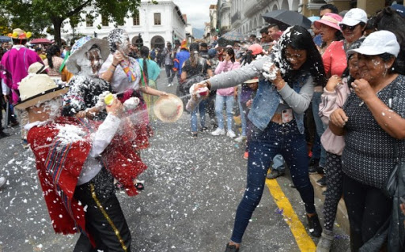

Cuenca se fundó el 12 de abril de 1557 mediante Gil Ramirez Dávalos bajo el
encargo del Virrey Hurtado de Mendoza. Llamada así por una ciudad española,
en un antigua meseta atravesada por cuatro ríos, nació la Atenas del Ecuador.
Cada año, para celebrar esta fecha importante, las calles de toda Cuenca, sobre
todo las del centro histórico adordan sus balcones con banderas.
Además se realiza el tradicional Desfile de la Cuencanidad. Donde hay
danzas folkróricas, carros alegóricos y música movida.
Independencia de Cuenca
De igual manera que con su fiesta de independencia, los cuencanos y cuencanas
en estas fechas, 3 de noviembre (1820), se visten de fiesta y celebran la libertad
que tanto les costó obtener.
Se celebran grandes desfiles, aumenta la cantidad de turistas y el centro histórico
cobra vida en cada plaza, en cada parque y en cada balcón.
Fiestas Generales
Fiestas Religiosas
Debido a la gran influencia que tuvo Cuenca de la moralidad católica española
desde su fundación, la ciudad ha heredado un fuerte sentido religioso y devoto.
Esto ha motivado que las fiestas de carácter religioso tenga un mayor significado
y respeto en este lugar.
Muchas de las fiestas católicas se las suelen celebrar mediante procesiones en donde
se recorre a pie varias calles importantes de la ciudad.
Un ejemplo de estas fiestas, es el Corpus Christi, una fiesta tan tradicional como
como importante para esta Ciudad. Al pasar de los años, los cuencanos han dotado de un
toque característico a la celebración por lo que muchos la llaman El Corpus Christi Cuencano,
en donde a través de pirotécnia y bailes no dejan que se pierdan las tradiciones de sus raíces.
Fiestas no Religiosas

Como ya se habrá explicado, la ciudad de Cuenca es sin duda una en la cuál las celebraciones
son realizadas con la mayor devoción y júbilo posible.
Así pues, las celebraciones que se suelen realizar en varias partes del mundo también son bien
recibidas aquí, sobre todo por los más jóvenes.
Fiestas como Carnaval, Halloween, San Valentín, entre otros, suelen tener grandes eventos que involucran
desde conciertos, danzas y fiestas que se realizan en varios locales.